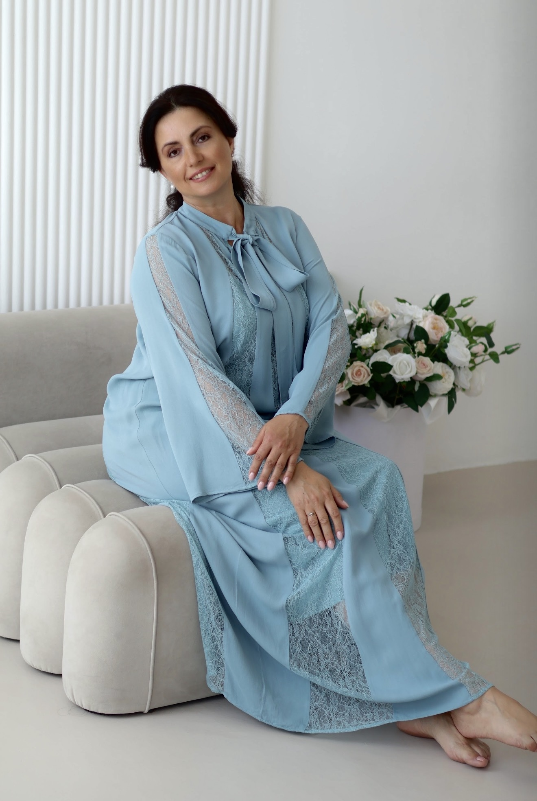
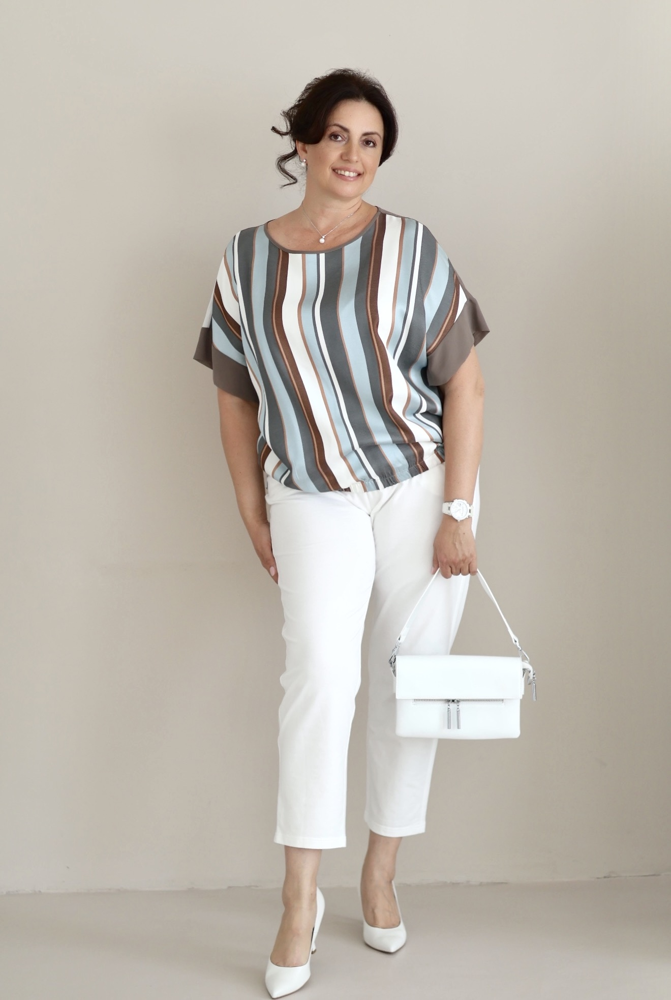

Психологія
Глибоке дослідження внутрішніх процесів.
Допомагаю зрозуміти зв’язок між психікою, тілом та емоціями, знайти причину труднощів і створити зміни, які покращують якість життя.

Від того, ЯК ми дивимося залежить ТЕ, що ми бачимо.

Я психолог і психотерапевт у мультимодальному підході. Уже понад 7 років допомагаю людям відновлювати зв'язок між психікою, тілом та емоціями, працюючи з психосоматикою, внутрішніми кризами та особистісними змінами.
У своїй роботі поєдную психологію, тілесні практики та сучасні методики, щоб людина могла не лише вирішити запит, а й навчитися краще розуміти себе та жити більш усвідомлено.
Мій шлях у психологію розпочався з особистого досвіду. Пошуки відповідей на власні питання щодо здоров’я та емоційного стану привели мене до глибокого вивчення психології, психосоматики, роботи з тілом і сучасних методик допомоги. Саме цей досвід став основою мого підходу, у якому поєднуються знання, практика та уважне ставлення до унікальної історії кожної людини.
Постійне навчання є невід'ємною частиною моєї роботи. Кожен сертифікат — це не просто документ, а ще один крок до глибшого розуміння людини, сучасних методів психотерапії та комплексного підходу до психологічної допомоги.


Я переконана, що людина — це більше, ніж окремий симптом чи проблема.
У своїй роботі я поєдную різні психологічні напрямки, роботу з тілом та сучасні методики, щоб бачити ситуацію цілісно та знаходити справжню причину труднощів.
Глибоке дослідження внутрішніх процесів.
Робота із взаємозв'язком тіла та психіки.
Безпечне проживання досвіду через тіло.
Кожна методика доповнює іншу.
Допомагаю працювати з різними життєвими запитами та знаходити причини, які заважають відчувати себе щасливими й жити повноцінним життям.
Я жінка, дружина, мати трьох дітей, маю 2 вищіх освіти. Одну з них зараз зробила справою свого життя. Це Психологія, а в більш ширшому сенсі це допомога людям на шляху до здоровья через знання та усвідомлення.
Прийшла я в цю професію через необхідність вирішувати свої задачі зі здоровьям та певними емоційними станами.
Я з дитинства полюбляла читати книги і казки з кінця. Спочатку заглядала в кінець історії, і якщо це було цікаво і мені подобався результат я починала спочатку.
Так і в випадку з Психологією. Коли мої хвороби і стан здоровья завели мене в глухий кут: різні діагнози, купи пігулок, обстежень, лікування після яких ставало ще гірше. Доводилось обирати між різними органами, тому що деякі пігулки були несумісними. І так як, одна з якостей мого характеру - це віра в те- що, завжди є вихід, є щось що може вирішити питання, я почала шукати інши підходи до здорового існування.
Так я зустріла дуже гарних Спеціалістів та Вчителів і почала великий шлях пізнання себе, того як працює організм, як пов’язані між собою психіка мозок та тіло, як формуються навчки та певні патерни поведінки, того що є насправді хворобою, а що є фазою відновлення і т. д. Моя наполегливість та здатність до аналізу були моїми помічниками в цьому процесі.
Вирішивши багато своїх задач і отримавши певний результат було прийнято рішення навчатися і зробити допомогу іншим справою життя!
Після цього було багато навчання в різних школах та напрямках для отримання комплексного підходу. І це не тільки Психологія а і вивчення анатомії, фізіології та біології людини. Разом з цим- практика та отримання результатів у вигляді сяючих очей та вдячності клієнтів від змінення якості життя та усвідомлення багатьох процесів, змінення сприйняття подій та змінення поведінки.
Наразі маю 7 років практики. Працюю як офлайн так і онлайн в м. Дніпро. Маю власний кабінет.
Одного разу я відчула задоволення від можливості приділяти собі час, працювати над собою в безпечному просторі де все Моє має значення, розвиватись та змінювати свою реальність! І я продовжую цей шлях, тому що вирішивши одні задачі з‘являються інші.
Психосоматичні симптоми часто є способом, яким організм повідомляє про внутрішні переживання, тривалий стрес чи невирішені конфлікти. У роботі ми досліджуємо не лише фізичний симптом, а й його психологічне підґрунтя.
Працюю із хронічними захворюваннями, тілесними симптомами, частими захворюваннями дітей, постійною втомою, напругою та іншими проявами, які можуть бути пов'язані з психоемоційним станом.
ЗаписатисьДопомагаю розібратися у складнощах партнерських стосунків, конфліктах, образах, кризах, втраті довіри чи близькості.
Проводжу як індивідуальні консультації, так і консультування пар, допомагаючи знаходити нові способи взаєморозуміння та будувати здорові відносини.
ЗаписатисьВідносини між батьками та дітьми формують основу майбутнього життя людини. Часто саме вони впливають на самооцінку, відчуття безпеки та здатність будувати здорові взаємини.
Разом ми шукаємо причини труднощів, покращуємо взаєморозуміння та створюємо більш спокійну атмосферу в сім'ї.
< ЗаписатисьЯкщо у вашому житті постійно повторюються схожі ситуації, конфлікти, втрати чи невдачі, це може бути проявом несвідомих життєвих сценаріїв.
Разом ми досліджуємо їх походження, знаходимо внутрішні причини та формуємо нові способи реагування, які відкривають більше свободи вибору.
ЗаписатисьПостійна тривога, виснаження, відчуття безсилля чи пригніченості можуть значно знижувати якість життя. З цими станами не потрібно залишатися наодинці.
У безпечному просторі консультації ми поступово знаходимо причини внутрішньої напруги, відновлюємо відчуття опори та повертаємо ресурс до життя.
ЗаписатисьЯкщо ви відчуваєте, що втратили напрямок, не знаєте чого хочете або прагнете змінити своє життя, цей запит може стати початком важливих внутрішніх змін.
Разом ми досліджуємо ваші цінності, здібності, внутрішні ресурси та знаходимо шлях, який буде відповідати саме вам, а не очікуванням інших.
ЗаписатисьЗдорові особисті кордони допомагають будувати гармонійні стосунки, відстоювати власні потреби та зберігати повагу до себе.
Під час консультацій ми вчимося помічати свої межі, впевнено говорити «ні», позбавлятися почуття провини та формувати стосунки, у яких є взаємна повага.
ЗаписатисьСкладнощі з розпізнаванням, проживанням або вираженням емоцій можуть проявлятися через внутрішню напругу, конфлікти, психосоматичні симптоми чи втрату контакту із собою.
У безпечному просторі консультації ви навчитеся краще розуміти свої почуття, екологічно їх проживати та використовувати як важливий ресурс для змін.
ЗаписатисьУ своїй роботі я використовую комплексний підхід, який поєднує сучасну психологію, роботу з тілом та інші ефективні методики відповідно до запиту людини.
Методика роботи підбирається індивідуально, щоб максимально точно відповідати вашому запиту та допомогти знайти оптимальний шлях до бажаних змін.
ЗаписатисьЯкщо ви вперше звертаєтесь до психолога, це абсолютно природно — виникає багато запитань. Нижче я зібрала відповіді на ті, які чую найчастіше.
Під час першої зустрічі ми знайомимося, обговорюємо ваш запит, визначаємо основні труднощі та напрямок подальшої роботи. Нічого спеціально готувати не потрібно.
Стандартна консультація триває близько 60 хвилин.
Так. Консультації проходять онлайн для клієнтів з будь-якої країни світу та офлайн у місті Дніпро.
Все залежить від вашого запиту. Іноді достатньо кількох зустрічей, а для глибоких змін потрібна більш тривала робота.
Психосоматика, тривожність, стосунки, особисті кордони, дитячо-батьківські стосунки, пошук себе, емоційні труднощі, повторювані життєві сценарії та інші психологічні запити.
Напишіть мені зручним для вас способом, щоб домовитися про консультацію, уточнити формат роботи або поставити запитання.